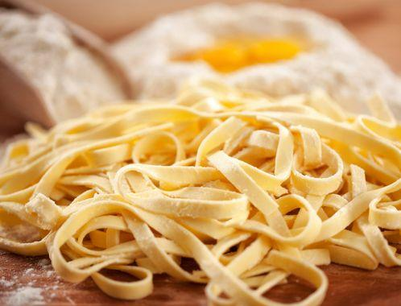

Bienvenue sur mon site spécialisé sur les pâtes, cet aliment que nous consommons tous au moins une fois par semaine, cet aliment pouvant être cuisiner de pleins de manières différentes, cet aliment qui rassasie petits et grands.
Les premières traces des pâtes sont d'origine chinoise et non italienne comme certains le pensent. En effet les plus anciennes jamais répertoriées datent de -2000 av JC. Elles étaient consituées de farine de deux millets. Le terme pâtes vient du latin italien "pasta" et les meilleures viennent principalement de Chine et d'Italie.
Voici quelques dates sur l'histoire des pâtes -2000 : nouilles de millet faites à la main en Chine 1154 : le géographe arabe Al Idrisi fait référence dans ses écrits aux pâtes de Trabia, un village auprès de Palerme en Sicile 1295 : la légende raconte que Marco Polo rentrant à Venise après son voyage en Chine, a introduit les pâtes en Italie. 1933 : l’Italie met au point une loi réglementant le commerce et la production des pâtes.

Voici une petie vidéo résumant l'histoire des pâtes
page2.html